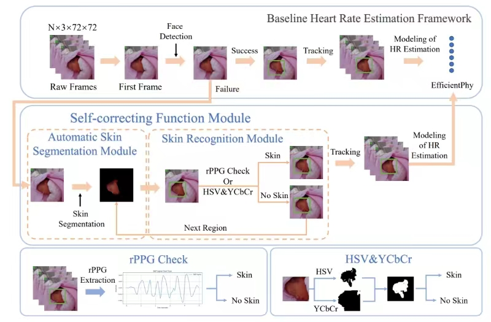

Self-Correcting Face Detection for Neonatal Heart Rate Estimation
Project Leaders
Kangyang Cao
Partner Organisations
深圳市儿童医院

Remote photoplethysmography (rPPG) is a non-invasive method that monitors heart rate (HR) and other vital signs by detecting tiny color changes in the face caused by blood flow under the skin. Current rPPG technology, which is optimized for ideal conditions, faces significant challenges in real-world clinical settings such as Neonatal Intensive Care Units (NICUs). These challenges primarily arise from the limitations of automatic face detection algorithms embedded in HR estimation frameworks, which have difficulty accurately detecting the faces of newborns. Newborns may frequently be positioned on their sides or have their faces partially obscured by objects. To address the challenges of face detection and HR estimation in newborns, we propose a novel HR estimation framework that incorporates a self-correcting face detection algorithm. The role of the self-correcting function module is to enhance the performance, robustness, and degree of automation of newborn face detection. Our proposed rPPG framework achieves improved face detection accuracy, increasing from 0.776 to 0.938, and lower error rates in HR estimation, decreasing from 12.10 to 8.71, compared with the baseline method for newborns in NICUs.